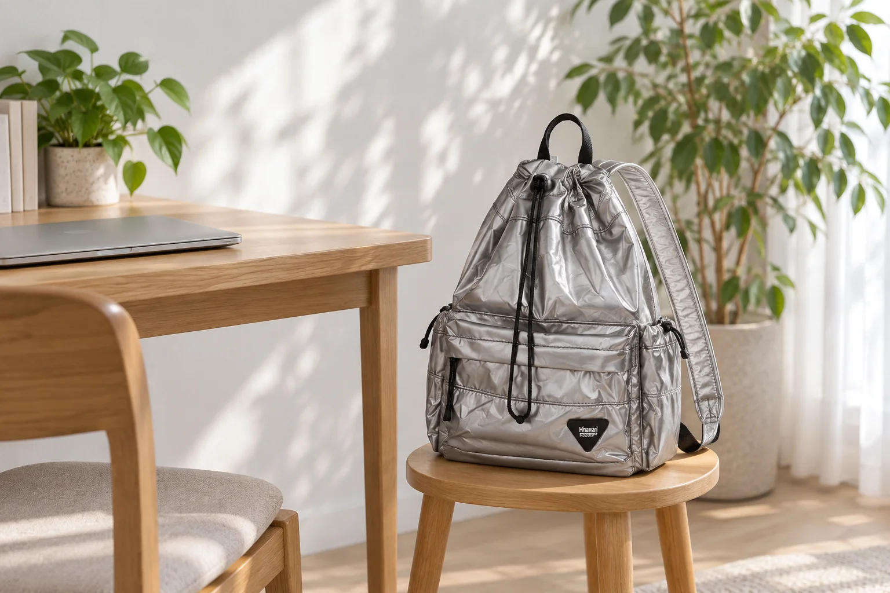

화상 모임의 배경에 가방을 둘 때

집에서 화상 모임을 열면 백팩은 의자 뒤나 책상 옆에 잠시 놓이는 물건이 됩니다. 집에 들어오며 내려놓았던 방향 그대로라면 이름표가 카메라 쪽을 향할 수도 있습니다. 가방을 배경 소품으로 고를지보다 먼저 살필 것은 화면 안에 들어오는 정보입니다. 내 눈에는 멀리 있는 글씨여도 상대 화면의 크기와 녹화 여부는 다를 수 있으므로, 공개하고 싶지 않은 표식을 눈에 띄지 않는 자리로 옮겨두는 편이 분명합니다.
방 전체를 새로 꾸밀 필요는 없습니다. 평소 모임에 쓰는 노트북을 열고 실제 앉을 자리에 앉아보면 됩니다. 책상에 가까이 다가갔을 때와 등받이에 몸을 기댔을 때 화면의 가장자리가 어떻게 바뀌는지 확인합니다. 화면 가운데의 얼굴에만 시선을 두면 의자 옆으로 튀어나온 가방끈이나 뒤쪽 서랍 위 물건을 놓치기 쉽습니다. 가장자리부터 천천히 훑으면 옮길 물건의 범위가 좁혀집니다.
앉아 있을 때와 움직일 때의 화면
카메라를 켠 순간의 자세만으로 점검을 마치면 모임 중의 동작이 빠집니다. 물컵을 집거나 책상 옆에서 노트를 가져오는 동작을 미리 해보세요. 몸에 가려져 있던 가방의 앞면이 그때 드러날 수 있습니다. 백팩을 옮길 자리도 앉은 자세에서 손이 닿는지, 의자를 빼면 부딪히는지 함께 봅니다. 바닥에 두더라도 전원선과 의자 바퀴 주변을 비워두면 중간에 자리에서 일어날 때 신경 쓸 일이 적습니다.
모임에 가져갈 수 없는 정보와 집에서 보여도 괜찮은 물건을 구분하면 판단이 쉬워집니다. 회사 출입증, 학교 이름표, 주소가 적힌 배송표처럼 개인이나 소속을 알아볼 수 있는 표식은 별도로 챙깁니다. 가방에서 떼어낸 뒤 아무 서랍에 넣으면 다음 외출 때 찾게 되니, 나중에 회수할 작은 접시나 파우치 한 곳을 정해두세요. 일시적으로 방향만 돌렸다면 모임 중 가방을 다시 들었을 때 어느 면이 보이는지도 고려합니다.
배경 흐림을 사용하려면 그 설정을 적용한 미리보기에서 한 번 더 움직여봅니다. 화면에 흐림이 보인다는 사실과 모든 동작에서 표식이 가려진다는 것은 따로 확인할 일입니다. 백팩을 카메라에 가까이 가져오거나 손이 가방 앞을 지나갈 때 결과가 달라질 수 있습니다. 표식 자체를 화면 밖에 놓은 다음 흐림을 고르면, 가방을 옮길 때마다 설정을 걱정할 필요가 줄어듭니다.
가방이 화면에 남는다면
집에 들어와 Himawari No.0514 제품 정보의 실버 일반형 같은 백팩을 책상 곁에 놓는다면, 모임이 끝난 뒤 다시 외출할지도 생각해볼 수 있습니다. 오늘 꺼낸 노트가 곧 사용할 자료라면 책상 위에 두고, 출입증은 회수하기 쉬운 자리에 모읍니다. 백팩을 화면에 남길지 다른 곳으로 옮길지는 모임 동안 가방을 열어야 하는지에 따라 결정하면 됩니다.

가방이 배경에 남아 있어도 모임마다 꾸며야 하는 것은 아닙니다. 여밈을 닫고 개인 표식을 정리한 상태에서 자리가 안정적이면 그대로 둘 수 있습니다. 다만 빈 의자 위에 백팩을 올려놓았다가 중간에 다른 사람이 앉아야 한다면 다시 움직이게 됩니다. 한 모임 동안 계속 둘 수 있는 자리인지 생각해보세요. 방 안에 사람이 함께 있다면 화면에 보이는 범위뿐 아니라 가방을 밟거나 옮기게 되는 동선도 확인할 만합니다.
시작 전에 책상으로 옮길 물건
모임 중 필요한 노트와 필기구를 가방에서 먼저 꺼내면 백팩을 화면 앞에 들어 올릴 일이 줄어듭니다. 자료가 여러 장이라면 오늘 확인할 것만 한 묶음으로 놓습니다. 충전 도구를 쓰는 경우에도 모임이 시작된 뒤 가방 바닥을 찾기보다 연결할 위치를 미리 정할 수 있습니다. 책상 위에 물건을 전부 펼쳐두면 화면보다 실제 작업 공간이 복잡해지므로, 사용할 순서와 자리를 함께 정하는 편이 좋습니다.
예를 들어 노트 한 권을 보며 의견을 나누는 모임이라면 책상에 노트와 펜을 남기고 다른 외출 짐은 가방에 둡니다. 추가 자료가 필요할 때는 가방 전체를 들기보다 잠깐 시간을 갖고 필요한 묶음만 꺼내도록 준비할 수 있습니다. 이때 꺼낸 물건을 다시 넣으려고 화면을 보며 뒤로 손을 뻗기보다 책상 한쪽에 잠시 놓아두는 편이 동작을 확인하기 쉽습니다. 모임의 흐름에 따라 조정할 수 있는 작은 준비입니다.
화면을 맞추느라 백팩을 높은 곳에 급히 걸어두었다면 모임이 끝난 뒤에도 그대로 남기 쉽습니다. 자리를 고를 때는 가방이 떨어지거나 끈이 문손잡이에 걸릴 가능성도 살펴보세요. 카메라에서 사라진 위치라도 생활 공간에서는 불편한 자리가 될 수 있습니다. 짧은 모임은 책상 옆의 안정된 위치가 편할 수 있고, 긴 모임은 가방을 다른 방에 두고 필요한 것만 가져오는 방식도 생각할 수 있습니다.
모임을 마친 뒤에는 화면에서 치웠던 출입증과 이름표부터 회수합니다. 책상 위 노트를 다음 외출에 가져갈지, 집에서 계속 사용할지 정한 다음 그 자리에 돌려놓으세요. 저녁 모임 뒤 곧 외출할 계획이라면 출입증을 가방으로 옮기는 순서까지 이어둘 수 있습니다. 가방은 닫았는데 표식이 책상 위에 남아 있다면 준비가 아직 끝나지 않은 셈입니다. 의자 주변을 정리하고 평소 쓰는 자리로 백팩을 옮기면 화면을 위해 잠시 바꿨던 공간도 돌아옵니다.